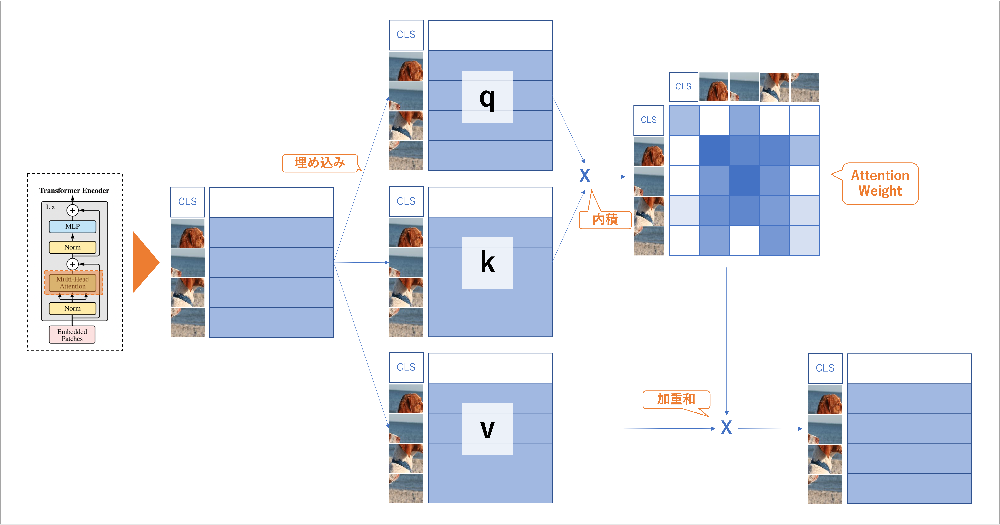

Vision Transformer
アルゴリズムの理解
ViT は大きく以下の 3 つの部分で構成されている（画像クラス分類の場合）
Input Layer
入力（画像）をパッチに分割
「クラストークン」 と 「パッチ」 のベクトルを出力
Encoder
Self-Attention 処理
「クラストークン」 を出力
MLPHead
入力画像に対するラベルを予測（クラス分類器）
Input Layer
パッチに分割
埋め込み (Embedding)
CLS (Class Token)
位置埋め込み (Positional Embedding)
説明のため パッチ 4 つ で図解
パッチに分割
埋め込み
クラストークンと位置埋め込み
実装
[2]:
import torch
import torch.nn as nn
import torch.nn.functional as F
[3]:
class VitInputLayer(nn.Module):
def __init__(self,
in_channels:int=3,
emb_dim:int=384,
nump_patch_row:int=2,
image_size:int=32):
super(VitInputLayer, self).__init__()
self.in_channels = in_channels
self.emb_dim = emb_dim
self.num_patch_row = nump_patch_row
self.image_size = image_size
# パッチ数
self.num_patch = self.num_patch_row**2
# パッチのサイズ : 画像 1 辺が 32 なら patch_size = 16
self.patch_size = int(self.image_size // self.num_patch_row)
# 入力画像のパッチ分割・埋め込み
self.patch_emb_layer = nn.Conv2d(
in_channels=self.in_channels,
out_channels=self.emb_dim,
kernel_size=self.patch_size,
stride=self.patch_size)
# CLS
self.cls_token = nn.Parameter(torch.randn(1, 1, emb_dim))
# Position Embedding
# CLS が先頭に結合されているため長さ emb_dim の位置埋め込みベクトルを（パッチ数 +1）個用意
self.pos_emb = nn.Parameter(torch.randn(1, self.num_patch+1, emb_dim))
def forward(self, x:torch.Tensor) -> torch.Tensor:
# パッチの埋め込み & flatten
## Patch の埋め込み (B, C, H, W) -> (B, D, H/P, W/P)
z_0 = self.patch_emb_layer(x)
## パッチの flatten (B, D, H/P, W/P) -> (B, D, Np)
## Np はパッチの数 (=H*W/P^2)
z_0 = z_0.flatten(2)
## 軸の入れ替え
z_0 = z_0.transpose(1, 2)
# パッチの埋め込みの先頭に CLS を結合
## (B, Np, D) -> (B, N, D) : N = (Np + 1)
## cls_token は (1, 1, D) なので repeat で (B, 1, D) に変換（複製）して結合する
z_0 = torch.cat([self.cls_token.repeat(repeats=(x.size(0), 1, 1)), z_0], dim=1)
# Position Embedding の加算
## (B, N, D) -> (B, N, D)
z_0 = z_0 + self.pos_emb
return z_0
[4]:
# check
x = torch.randn(1, 3, 32, 32)
input_layer = VitInputLayer()
z_0 = input_layer(x)
z_0.shape
[4]:
torch.Size([1, 5, 384])
Encoder
Self-Attention（自己注意）
パッチ内の情報の抽出
-> 埋め込み
自分との類似度測定
-> ベクトル同士の内積
類似度に基づいた合体
-> 内積の値を係数にした加重和
-> 係数 : 内積の Softmax で算出
-> 加重和 : Attention Weight
Self-Attention のイメージ
q (query)
k (key)
v (value)
q, k, v ともに全く同じベクトルから埋め込んだ結果だが、それぞれ異なる線形層を用いて埋め込まれているため、異なる値を取る。
q, k, v に分ける表現は動画サイトの動画検索に例えるとわかりやすい。
q : 検索キーワード
k : 動画タイトル
v : 動画
内積 -> 行列積 (ソフトマックスで正規化) -> 類似度になる。
Multi-Head Self-Attention
[5]:
class MultiHeadSelfAttention(nn.Module):
def __init__(self,
emb_dim:int=384,
head:int=3,
dropout:float=0.):
super(MultiHeadSelfAttention, self).__init__()
self.head = head
self.emb_dim = emb_dim
self.head_dim = emb_dim // head
# D_h の 二乗根：qk^T を割るための係数
self.sqrt_dh = self.head**0.5
# 入力を query, key, value に埋め込むための線形層
self.w_q = nn.Linear(emb_dim, emb_dim, bias=False)
self.w_k = nn.Linear(emb_dim, emb_dim, bias=False)
self.w_v = nn.Linear(emb_dim, emb_dim, bias=False)
# Dropout
self.attn_drop = nn.Dropout(dropout)
# MHSA の結果を出力に埋め込むための線形層
self.w_o = nn.Sequential(
nn.Linear(emb_dim, emb_dim),
nn.Dropout(dropout))
def forward(self, z:torch.Tensor) -> torch.Tensor:
batch_size, num_patch, _ = z.size()
# 埋め込み:(B, N, D) -> (B, N, D)
q = self.w_q(z)
k = self.w_k(z)
v = self.w_v(z)
# (q, k, v) を head に分ける
## まずベクトルを head の個数に分ける
## (B, N, D) -> (B, N, h, D//h)
q = q.view(batch_size, num_patch, self.head, self.head_dim)
k = k.view(batch_size, num_patch, self.head, self.head_dim)
v = v.view(batch_size, num_patch, self.head, self.head_dim)
## Self-Attention ができるように（バッチサイズ、ヘッド、トークン数、バッチのベクトル）の形状にする
## (B, N, h, D//h) -> (B, h, N, D///h)
q = q.transpose(1, 2)
k = k.transpose(1, 2)
v = v.transpose(1, 2)
# 内積
## (B, h, N, D//h) -> (B, h, D//h, N)
k_T = k.transpose(2, 3)
## (B, h, N, D//h) x (B, h, D//h, N) -> (B, h, N, N)
dots = (q @ k_T) / self.sqrt_dh
## 列方向にソフトマックス
attn = F.softmax(dots, dim=-1)
attn = self.attn_drop(attn)
# 加重和
## (B, h, N, N) x (B, h, N, D//h) -> (B, h, N, D//h)
out = attn @ v
## (B, h, N, D//h) -> (B, N, h, D//h)
out = out.transpose(1, 2)
## (B, N, h, D//h) -> (B, N, D)
out = out.reshape(batch_size, num_patch, self.emb_dim)
# 出力層
## (B, N, D) -> (B, N, D)
out = self.w_o(out)
return out
[6]:
# check
print(z_0.shape)
mhsa = MultiHeadSelfAttention()
out = mhsa(z_0)
print(out.shape)
torch.Size([1, 5, 384])
torch.Size([1, 5, 384])
Encoder Block
LayerNormalization
Multi-Head Self-Attention
MLP（活性化関数：GERU）
[7]:
class VitEncoderBlock(nn.Module):
def __init__(self,
emb_dim:int=384,
head:int=8,
hidden_dim:int=384*4,
dropout:float=0.
):
super(VitEncoderBlock, self).__init__()
# 1 つ目の LayerNorm
self.ln1 = nn.LayerNorm(emb_dim)
# mhsa
self.msa = MultiHeadSelfAttention(
emb_dim=emb_dim,
head=head,
dropout=dropout
)
# 2 つ目の LayerNorm
self.ln2 = nn.LayerNorm(emb_dim)
# MLP
self.mlp = nn.Sequential(
nn.Linear(emb_dim, hidden_dim),
nn.GELU(),
nn.Dropout(dropout),
nn.Linear(hidden_dim, emb_dim),
nn.Dropout(dropout)
)
def forward(self, z:torch.Tensor) -> torch.Tensor:
# Encoder Block の前半
out = self.msa(self.ln1(z)) + z
# Encoder Block の後半
out = self.mlp(self.ln2(out)) + out
return out
[8]:
# check
vit_enc = VitEncoderBlock()
z_1 = vit_enc(z_0)
print(z_1.shape)
torch.Size([1, 5, 384])
ViT 全体
Input Layer
Encoder
MLP Head
全体像
[9]:
class Vit(nn.Module):
def __init__(self,
in_channels:int=3,
num_classes:int=10,
emb_dim:int=384,
num_patch_row:int=2,
image_size:int=32,
num_blocks:int=7,
head:int=8,
hidden_dim:int=384*4,
dropout:float=0.
):
super(Vit, self).__init__()
# Input Layer
self.input_layer = VitInputLayer(
in_channels,
emb_dim,
num_patch_row,
image_size)
# Encoder (Encoder Block の多段)
self.encoder = nn.Sequential(*[
VitEncoderBlock(
emb_dim=emb_dim,
head=head,
hidden_dim=hidden_dim,
dropout=dropout
)
for _ in range(num_blocks)])
# MLP Head
self.mlp_head = nn.Sequential(
nn.LayerNorm(emb_dim),
nn.Linear(emb_dim, num_classes)
)
def forward(self, x:torch.Tensor) -> torch.Tensor:
# Input Layer
## (B, C, H, W) -> (B, N, D)
## N: トークン数（パッチ数 +1）D: ベクトルの長さ
out = self.input_layer(x)
# Encoder
## (B, N, D) -> (B, N, D)
out = self.encoder(out)
# クラストークンのみ抜き出す
## (B, N, D) -> (B, D)
cls_token = out[:, 0]
# MLP Head
## (B, D) -> (B, M)
pred = self.mlp_head(cls_token)
return pred
[10]:
# check
x = torch.randn(1, 3, 32, 32)
vit = Vit()
pred = vit(x)
print(pred.shape)
torch.Size([1, 10])
犬猫画像分類を試し
[11]:
import os
import random
import numpy as np
import pandas as pd
# torch
import torch
from torch import nn
from torch.optim import Adam
from torch.optim.optimizer import Optimizer
from torch.utils import data
# torchvision
from torchvision import transforms as T
# scikit-learn
# from sklearn.metrics import mean_squared_error
from sklearn.metrics import accuracy_score
[12]:
def seed_torch(seed=0):
random.seed(seed)
os.environ['PYTHONHASHSEED'] = str(seed)
np.random.seed(seed)
torch.manual_seed(seed)
torch.cuda.manual_seed(seed)
torch.backends.cudnn.deterministic = True
[13]:
DEVICE = torch.device('cuda' if torch.cuda.is_available() else 'cpu')
[14]:
# !unzip -q ./dog_cat_data.zip
[15]:
from glob import glob
from PIL import Image
[16]:
dog_filepaths = sorted(glob('./dog_cat_data/train/dog/*.jpg'))
cat_filepaths = sorted(glob('./dog_cat_data/train/cat/*.jpg'))
paths = dog_filepaths + cat_filepaths
len(paths)
[16]:
300
[17]:
class MyDataset(data.Dataset):
def __init__(self, paths):
self.paths = paths
self.transform = T.Compose([
T.Resize(256),
T.CenterCrop(224),
T.ToTensor(),
T.Normalize(mean=[0.485, 0.456, 0.406], std=[0.229, 0.224, 0.225])])
self.labels = [0 if p.split('/')[-2] == 'cat' else 1 for p in self.paths]
def __getitem__(self, idx):
path = self.paths[idx]
img = Image.open(path).convert('RGB')
img_transformed = self.transform(img)
label = self.labels[idx]
return img_transformed, label
def __len__(self):
return len(self.paths)
[18]:
dataset = MyDataset(paths=paths)
n_train = int(len(dataset) * 0.7)
n_val = len(dataset) - n_train
train, val = data.random_split(dataset, [n_train, n_val])
len(train), len(val)
[18]:
(210, 90)
[19]:
batch_size = 32
train_loader = data.DataLoader(train, batch_size, shuffle=True, drop_last=True)
val_loader = data.DataLoader(train, batch_size)
[20]:
# check
x, t = next(iter(train_loader))
x.shape, t.shape
[20]:
(torch.Size([32, 3, 224, 224]), torch.Size([32]))
[21]:
def train(
model: nn.Module,
optimizer: Optimizer,
train_loader: data.DataLoader):
model.train()
# criterion = nn.MSELoss() # 回帰
criterion = nn.CrossEntropyLoss() # 分類
epoch_loss = 0.0
epoch_accuracy = 0.0
for i, (x_i, y_i) in enumerate(train_loader):
x_i = x_i.to(DEVICE, dtype=torch.float32)
# y_i = y_i.to(DEVICE, dtype=torch.float32).reshape(-1, 1) # 回帰
y_i = y_i.to(DEVICE, dtype=torch.int64) # 分類
output = model(x_i)
loss = criterion(output, y_i)
optimizer.zero_grad()
loss.backward()
accuracy = (output.argmax(dim=1) == y_i).float().mean()
epoch_loss += loss
epoch_accuracy += accuracy
optimizer.step()
return epoch_loss / len(train_loader), epoch_accuracy / len(train_loader)
def valid(model: nn.Module, valid_loader: data.DataLoader):
model.eval()
criterion = nn.CrossEntropyLoss()
valid_loss = 0.0
valid_accuracy = 0.0
for x_i, y_i in valid_loader:
x_i = x_i.to(DEVICE, dtype=torch.float32)
y_i = y_i.to(DEVICE, dtype=torch.int64)
with torch.no_grad():
output = model(x_i)
loss = criterion(output, y_i)
accuracy = (output.argmax(dim=1) == y_i).float().mean()
valid_loss += loss
valid_accuracy += accuracy
return valid_loss / len(valid_loader), valid_accuracy / len(valid_loader)
補足：学習率のスケジューラ
[22]:
import matplotlib.pyplot as plt
from torch.optim.lr_scheduler import StepLR, CosineAnnealingLR, ExponentialLR
model = Vit(
in_channels=3,
num_classes=2,
num_patch_row=8,
image_size=224,
dropout=.1)
optimizer = Adam(model.parameters(), lr=1)
schedulers = [
lambda optim: CosineAnnealingLR(optim, T_max=10), # 半周期 10 の cosine
lambda optim: StepLR(optim, step_size=30, gamma=.2), # 30 epoch ごとに学習率を 0.05 倍
lambda optim: ExponentialLR(optim, gamma=.95) # 毎 epoch ごとに 0.95 倍
]
epochs = list(range(100))
fig, ax = plt.subplots(figsize=(10, 6))
for get_scheduler in schedulers:
rates = []
sche = get_scheduler(Adam(model.parameters(), lr=1.))
for i in epochs:
rates.append(sche.get_last_lr()[0])
sche.step()
ax.step(epochs, rates, label=type(sche))
# ax.set_yscale('log')
ax.grid()
ax.legend();
/anaconda/envs/azureml_py38/lib/python3.8/site-packages/torch/optim/lr_scheduler.py:129: UserWarning: Detected call of `lr_scheduler.step()` before `optimizer.step()`. In PyTorch 1.1.0 and later, you should call them in the opposite order: `optimizer.step()` before `lr_scheduler.step()`. Failure to do this will result in PyTorch skipping the first value of the learning rate schedule. See more details at https://pytorch.org/docs/stable/optim.html#how-to-adjust-learning-rate
warnings.warn("Detected call of `lr_scheduler.step()` before `optimizer.step()`. "
[23]:
def run_fold(
model: nn.Module,
train_loader: data.DataLoader,
valid_loader: data.DataLoader,
n_epochs=50) -> np.ndarray:
optimizer = Adam(model.parameters(), lr=1e-2)
scheduler = CosineAnnealingLR(optimizer, T_max=5, eta_min=1e-4)
for epoch in range(1, n_epochs + 1):
print(f'epoch: {epoch} lr: {scheduler.get_last_lr()[0]:.4f}')
train_loss, train_acc = train(model, optimizer, train_loader)
valid_loss, valid_acc = valid(model=model, valid_loader=valid_loader)
scheduler.step()
print(f'score: train_loss {train_loss:.3f} train_acc {train_acc:.3f} valid_loss {valid_loss:.3f} valid_acc {valid_acc:.3f}')
[24]:
seed_torch(0)
vit = Vit(
in_channels=3,
num_classes=2,
num_patch_row=8,
image_size=224,
dropout=.1)
vit = vit.to(DEVICE)
[25]:
seed_torch()
run_fold(
model=vit,
train_loader=train_loader,
valid_loader=val_loader,
n_epochs=20)
epoch: 1 lr: 0.0100
score: train_loss 2.258 train_acc 0.484 valid_loss 0.861 valid_acc 0.470
epoch: 2 lr: 0.0091
score: train_loss 0.777 train_acc 0.536 valid_loss 0.694 valid_acc 0.522
epoch: 3 lr: 0.0066
score: train_loss 0.701 train_acc 0.531 valid_loss 0.680 valid_acc 0.539
epoch: 4 lr: 0.0035
score: train_loss 0.695 train_acc 0.531 valid_loss 0.681 valid_acc 0.568
epoch: 5 lr: 0.0010
score: train_loss 0.707 train_acc 0.531 valid_loss 0.687 valid_acc 0.535
epoch: 6 lr: 0.0001
score: train_loss 0.676 train_acc 0.573 valid_loss 0.679 valid_acc 0.548
epoch: 7 lr: 0.0010
score: train_loss 0.697 train_acc 0.521 valid_loss 0.675 valid_acc 0.583
epoch: 8 lr: 0.0035
score: train_loss 0.809 train_acc 0.547 valid_loss 0.966 valid_acc 0.470
epoch: 9 lr: 0.0066
score: train_loss 0.803 train_acc 0.536 valid_loss 0.816 valid_acc 0.470
epoch: 10 lr: 0.0091
score: train_loss 0.840 train_acc 0.516 valid_loss 0.679 valid_acc 0.602
epoch: 11 lr: 0.0100
score: train_loss 0.794 train_acc 0.516 valid_loss 0.705 valid_acc 0.530
epoch: 12 lr: 0.0091
score: train_loss 0.846 train_acc 0.484 valid_loss 1.001 valid_acc 0.530
epoch: 13 lr: 0.0066
score: train_loss 0.798 train_acc 0.547 valid_loss 0.914 valid_acc 0.470
epoch: 14 lr: 0.0035
score: train_loss 0.810 train_acc 0.505 valid_loss 0.771 valid_acc 0.530
epoch: 15 lr: 0.0010
score: train_loss 0.723 train_acc 0.547 valid_loss 0.696 valid_acc 0.530
epoch: 16 lr: 0.0001
score: train_loss 0.691 train_acc 0.521 valid_loss 0.691 valid_acc 0.530
epoch: 17 lr: 0.0010
score: train_loss 0.697 train_acc 0.490 valid_loss 0.704 valid_acc 0.470
epoch: 18 lr: 0.0035
score: train_loss 0.702 train_acc 0.500 valid_loss 0.693 valid_acc 0.530
epoch: 19 lr: 0.0066
score: train_loss 0.705 train_acc 0.490 valid_loss 0.687 valid_acc 0.549
epoch: 20 lr: 0.0091
score: train_loss 0.701 train_acc 0.516 valid_loss 0.690 valid_acc 0.488
学習はできるが、性能改善には DataAugmentation や事前学習済みモデルのファインチューニングが必要
事前学習済みモデルの活用
PyTorch Image MOdels
※ torchvisionmodels にもある
[26]:
# !pip3 -q install timm
[27]:
import timm
[28]:
print('Available Vision Transformer Models: ')
timm.list_models('vit*')
Available Vision Transformer Models:
[28]:
['vit_base_patch8_224',
'vit_base_patch8_224_dino',
'vit_base_patch8_224_in21k',
'vit_base_patch16_18x2_224',
'vit_base_patch16_224',
'vit_base_patch16_224_dino',
'vit_base_patch16_224_in21k',
'vit_base_patch16_224_miil',
'vit_base_patch16_224_miil_in21k',
'vit_base_patch16_224_sam',
'vit_base_patch16_384',
'vit_base_patch16_plus_240',
'vit_base_patch16_rpn_224',
'vit_base_patch32_224',
'vit_base_patch32_224_clip_laion2b',
'vit_base_patch32_224_in21k',
'vit_base_patch32_224_sam',
'vit_base_patch32_384',
'vit_base_patch32_plus_256',
'vit_base_r26_s32_224',
'vit_base_r50_s16_224',
'vit_base_r50_s16_224_in21k',
'vit_base_r50_s16_384',
'vit_base_resnet26d_224',
'vit_base_resnet50_224_in21k',
'vit_base_resnet50_384',
'vit_base_resnet50d_224',
'vit_giant_patch14_224',
'vit_giant_patch14_224_clip_laion2b',
'vit_gigantic_patch14_224',
'vit_huge_patch14_224',
'vit_huge_patch14_224_clip_laion2b',
'vit_huge_patch14_224_in21k',
'vit_large_patch14_224',
'vit_large_patch14_224_clip_laion2b',
'vit_large_patch16_224',
'vit_large_patch16_224_in21k',
'vit_large_patch16_384',
'vit_large_patch32_224',
'vit_large_patch32_224_in21k',
'vit_large_patch32_384',
'vit_large_r50_s32_224',
'vit_large_r50_s32_224_in21k',
'vit_large_r50_s32_384',
'vit_relpos_base_patch16_224',
'vit_relpos_base_patch16_cls_224',
'vit_relpos_base_patch16_clsgap_224',
'vit_relpos_base_patch16_plus_240',
'vit_relpos_base_patch16_rpn_224',
'vit_relpos_base_patch32_plus_rpn_256',
'vit_relpos_medium_patch16_224',
'vit_relpos_medium_patch16_cls_224',
'vit_relpos_medium_patch16_rpn_224',
'vit_relpos_small_patch16_224',
'vit_relpos_small_patch16_rpn_224',
'vit_small_patch8_224_dino',
'vit_small_patch16_18x2_224',
'vit_small_patch16_36x1_224',
'vit_small_patch16_224',
'vit_small_patch16_224_dino',
'vit_small_patch16_224_in21k',
'vit_small_patch16_384',
'vit_small_patch32_224',
'vit_small_patch32_224_in21k',
'vit_small_patch32_384',
'vit_small_r26_s32_224',
'vit_small_r26_s32_224_in21k',
'vit_small_r26_s32_384',
'vit_small_resnet26d_224',
'vit_small_resnet50d_s16_224',
'vit_srelpos_medium_patch16_224',
'vit_srelpos_small_patch16_224',
'vit_tiny_patch16_224',
'vit_tiny_patch16_224_in21k',
'vit_tiny_patch16_384',
'vit_tiny_r_s16_p8_224',
'vit_tiny_r_s16_p8_224_in21k',
'vit_tiny_r_s16_p8_384']
[29]:
# ベースモデルの取得
MODEL_NAME = 'vit_base_patch16_224'
_model = timm.create_model(MODEL_NAME, pretrained=False)
print(_model.head)
for param in _model.parameters():
param.requires_grad = False
# タスクに合わせてアーキテクチャを変更
_model.head = nn.Linear(_model.head.in_features, 2)
print(_model.head)
Linear(in_features=768, out_features=1000, bias=True)
Linear(in_features=768, out_features=2, bias=True)
[30]:
# アーキテクチャと更新するパラメータの確認
# !pip3 -q install torchsummary
# from torchsummary import summary
# _model = _model.to(DEVICE)
# summary(_model, input_size=(3, 224, 224))
[32]:
class ViTBased(nn.Module):
def __init__(self, n_classes:int=2):
super(ViTBased, self).__init__()
self.model = timm.create_model(MODEL_NAME, pretrained=True)
for param in self.model.parameters():
param.requires_grad = False
self.model.head = nn.Linear(self.model.head.in_features, n_classes)
def forward(self, x:torch.Tensor) -> torch.Tensor:
out = self.model(x)
return out
[33]:
seed_torch()
vit = ViTBased(n_classes=2)
vit = vit.to(DEVICE)
[34]:
def run_fold(
model: nn.Module,
train_loader: data.DataLoader,
valid_loader: data.DataLoader,
n_epochs=50) -> np.ndarray:
optimizer = Adam(model.parameters(), lr=1e-2)
for epoch in range(1, n_epochs+1):
print(f'epoch: {epoch}')
train_loss, train_acc = train(model, optimizer, train_loader)
valid_loss, valid_acc = valid(model=model, valid_loader=valid_loader)
print(f'score: train_loss {train_loss:.3f} train_acc {train_acc:.3f} valid_loss {valid_loss:.3f} valid_acc {valid_acc:.3f}')
[35]:
run_fold(
model=vit,
train_loader=train_loader,
valid_loader=val_loader,
n_epochs=3)
epoch: 1
score: train_loss 0.381 train_acc 0.891 valid_loss 0.072 valid_acc 0.974
epoch: 2
score: train_loss 0.037 train_acc 0.984 valid_loss 0.000 valid_acc 1.000
epoch: 3
score: train_loss 0.000 train_acc 1.000 valid_loss 0.000 valid_acc 1.000
[ ]: